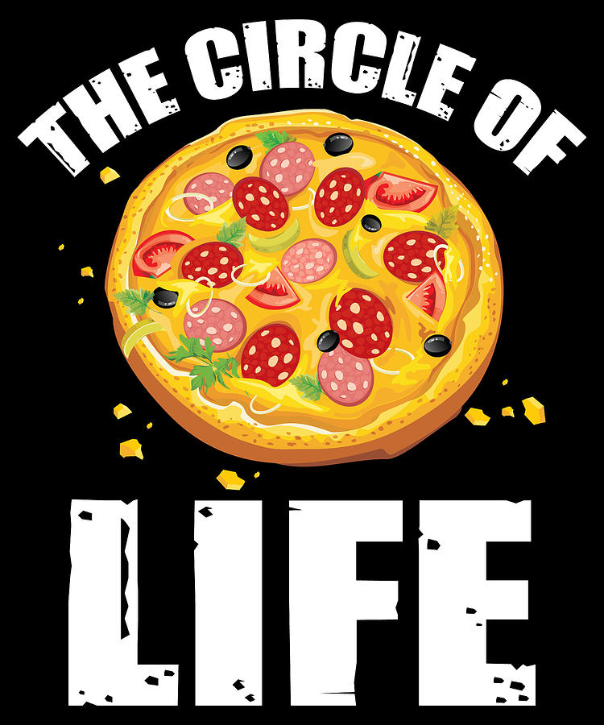

Híreink
Benito Mussolini közel másfél évtizede nyitotta meg Stockholm kapuit az olasz konyha szerelmeseinek. Elhozta hozzánk Olaszország és szűkebb hazája Calabria gasztronómiájának általános ízeit azzal a céllal, hogy megismerhessük a világon mindenhol közkedvelt ételeket, az ő egyéni ízlésvilágával és eleganciájával gazdagítva. Az étterem 2021-tól megújult környezetben, de a megszokott színvonallal várja régi és új vendégeit.
Alláslehetőség
Szakács/Pizzaszakács
.jpg)
Követelmények:
Légy igényes önmagadra és környezetedre. Tudj önnálóan de csapatban is dolgozni!
Rendelkezz szakirányú végzetséggel, legalább két év gyakorlat, magyaros és olasz konyha ismerete,
ha esetleg abban nem vagy annyira jártas mi szívesen megtanítunk rá!
Munkakörülmények:
Stabil fizetőképes háttér, 8 órás bejelentés, minimum 15 nap munka, de ez akár lehet több is ha
szeretnéd!
Futárszolgálat
Követelmények:
Termékek kiszállításavendégek kedves és magasszínvonalú kiszolgálása, a minőségre
vonatkozo betartása, a munkakörnyezet és mznkaeszköz/gépjármű rendben és tisztán tartása.
Valamint
pozitív kisugárzás és jó csapatmunka.
Munkakörülmények:
Stabil fizetőképes háttér, 8 órás bejelentés, minimum 15 nap munka, de ez akár lehet több is ha
szeretnéd!
Érdekességek a pizzáról
Az első pizzéria 1738-ban, Nápolyban nyílt meg, és az Antica Pizzeria nevet viselte.
A Guiness Világrekordok Könyve szerint a valaha sütött legnagyobb pizza 172 cm átmérőjű volt, és több mint 12 kilót nyomott – 1990-ben, Dél-Afrikában sütötték. Ezt a rekordot 2005-ben, az Iowa-állambeli fallsi pizzériatulajdonos, Bill Bahr szárnyalta túl: közel négyméteres pizzát sütött kétszáz fős csapatának segítségével, mellyel az egész várost jóllakatta.
2014-ben egy pizzafutár 340 000 forintnak megfelelő borravalót kapott az Egyesült Államokban. A James Gilpin névre keresztelt férfi a Domino pizzéria futára volt, és mindössze két, összesen 3 400 forint értékű pizzát kellett kiszállítania a busás jutalomért.
Az Egyesült Államokban másodpercenként 350 szelet pizzát adnak el.
A hawaii pizzát Kanadában találták fel.
A világ legdrágább pizzája 12 000 dollárba (több mint hárommillió forint) került, és Renato Viola séf készítette el. Ami a feltétet illeti: három különböző féle kaviár, vörös garnélarák, mediterrán homár és tengeri tücsök került rá.
Időszámításunk szerint 997-ben használták először a pizza szót, méghozzá Olaszországban.
Míg Európában a pizza ketchuppal való ízesítése a jellemzőbb, addig Japánban majonézzel dobják fel e paradicsomalapú finomságot.
Ugyan ma, február 9-én van a nemzetközi pizzanap, ennek ellenére az Egyesült Államokban külön hónapot szenteltek e minden jóval megrakott finomságnak: 1987-ben hivatalosan is pizzahónapnak nyilvánították októbert.
Az UGNazi névre keresztelt hackercsoport 2012-ben bosszúból meghackelte a Papa John pizzéria weboldalát, mert több mint két órát késtek a kiszállítással.